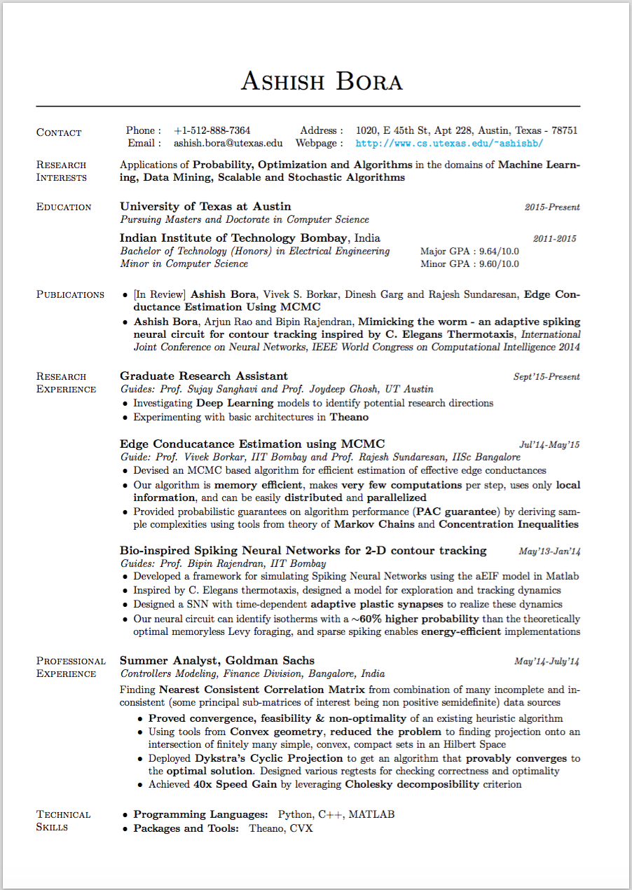

Resume

Other interests
I like to solve logical puzzles and mathematical problems. Our team stood first in Math and Logic General Championship 2012 open for everyone at IIT Bombay. I was also part of the team that stood first in Electronics General Championship 2013 at IIT Bombay.
I love to listen to music and play acoustic guitar. I haven’t taken any formal training, but learnt to play through my friends and the Internet. I performed as a rhythm guitarist in Surbahaar, IIT Bombay’s annual musical night.
I like to keep myself updated on scientific advances and geopolitical events. I enjoy reading about evolution, history of human civilization, psychological experiments, astronomical events and space programs. I like to read books on fiction, scientific speculation and entrepreneurship.
I have completed over one year of training with the National Cadet Corps.
Contact
Mailing address:
1020, E 45th St,
Austin, Texas - 78751
USA
Bio-inspired Neural Networks for 2-D contour tracking
Joint work with :
Arjun Rao and Prof. Bipin Rajendran, Department of Electrical Engineering, IIT Bombay, India
Background
Humans are incredibly efficient at complex tasks such as face recognition, speech recognition, performing complex maneuvers etc., while being robust to noise and adaptive to dynamic environment. Current artificial systems that try to mimic these capabilities leave a lot to be desired. Spiking Neural Networks (SNNs) closely model the important aspects of biological neural systems and hold a great potential as building blocks for intelligent systems. We seek to demonstrate the power of SNNs by designing a small network to perform two dimensional locomotion control
Approach and Results
C. Elegans is a tiny worm which tends to migrate to regions of favorable temperature. This behavior is called thermotaxis. Laser ablation studies indicate that a small 5-7 neuron network controls thermotaxis in C. Elegans. Using certain known properties of the neurons in this network, we guessed their functions and based on that, designed a dynamics model for exploration and tracking. We then built SNNs to realize different components of this model and put them together to create the complete circuit shown here. Some of these synapses are plastic and are their strength is governed by simple, local rules.

We tested our model on various noisy temperature profiles using simulations in MATLAB. A sample run is shown in the video. Initially, the worm is away from the ideal temperature of 20°C. So, it starts an exploration through a random walk. When it comes near the required isotherm, the tracking circuit kicks in, and the worm starts to nicely trace the isotherm. Spike trains of some neurons shown on the left
Results indicate that our neural circuit can identify isotherms with ~60% higher probability than the theoretically optimal memoryless Levy foraging. Further, the model exhibits sparse spiking enabling energy-efficient implementations. We published our work at International Joint Conference on Neural Networks (IJCNN) 2014, held at Beijing. You can find the poster and the complete paper here:
Rank Preserving Graph Sparsification
Joint work with :
Prof. Vivek Borkar, IIT Bombay, Mumbai, India
Prof. Rajesh Sundaresan, Indian Institute of Science, Bangalore, India
Dr. Dinesh Garg, IBM Research, Bangalore, India
Background
Computing node ranking in a graph finds several applications, the most notable being Google’s PageRank. Such problems can be huge in size, and underlying graphs dynamic in nature. In such cases, repeated computation of ranking can be extremely expensive. We explore the possibility of designing an adaptive graph sparsification scheme, that compresses the graph by edge deletions while preserving ranks approximately.
Approach and Results
Many popular ranking schemes (such as PageRank, HITS) order the nodes according to top eigenvector of matrices derived from the graph structure. Preserving spectrum then is a good proxy for preserving ranking. Spielman and Shrivastava[2011], show that sampling the edges according to their effective resistances preserves spectrum. Based on this, we proposed a method of graph compression, where edges with small resistance are dropped. Typically, ordinal ranking determined by empirical estimates converge exponentially fast. MCMC algorithms can give such empirical estimates with low computation per iteration and low memory footprint. So, we designed two MCMC based algorithms to estimate edge resistances. We prove that edge resistances are efficiently PAC learnable using our schemes by deriving corresponding sample complexities. We are currently working on using eigenvector perturbation theory to obtain compression-accuracy tradeoffs. We also plan to use importance sampling to further improve the edge resistance estimation methods.
A report for work done till now (BTP Stage I) and the poster used for Stage I presentation can be found here.
Fixing Inconsistent Correlation Matrices
Quantitative Analyst Intern
Controllers Modeling, Finance Division, Goldman Sachs, Bangalore, India
Background
An (undisclosed) application involves combining incomplete correlation data from many different sources. Since some sources are more reliable than others, we combine the data giving preference to reliable sources. Such combination leads to inconsistencies, making some principal sub-matrices of the correlation matrix non positive semi-definite. Out of them, some might be of further interest, and we would like to make sure that they are consistent. How do we find the nearest matrix (in terms of Frobenius norm) such that the sub-matrices of interest are ensured to be positive semidefinite?
Approach and Results
We tried a heuristic algorithm that sequentially “fixed” the principal sub-matrices one by one and looped till little change was observed. On the data we had, it gave promising results. My aim was to analyze the problem mathematically and obtain provably optimal results. I modeled the problem using tools from convex geometry and reduced it to finding projection of a given point onto an intersection of finitely many simple (easy to project on), convex, compact sets in an Hilbert Space. Lastly, I used Dykstra’s Cyclic Projection idea to get an algorithm that provably converges to the optimal solution. The heuristic algorithm turned out to be an instance of alternating projections method, which is guaranteed to converge to a feasible, but possibly non-optimal solution. Additionally, I achieved a 40x speedup by using efficient algorithms for checking positive semi-definiteness of submatrices.
Traffic Surveillance System using videos
Joint work with : Pulkit Agrawal
Supervised by : Prof. Ajit Rajwade, IIT Bombay, India
Can we automatically detect, track, and count unique vehicles in videos?
In most applications, the camera is mounted and hence background does not change much. We trained a Gaussian Mixture Model to achieved adaptive and robust background estimation. Moving objects were detected using background subtraction, thresholding, median filtering, morphological closing and connected component analysis. We then developed an algorithm for predictive tracking of vehicles in the video by clustering instances of same vehicle across frames.
A sample run of the algorithm is shown in the video. Blue streaks are traces produced by the algorithm. Each trace corresponds to one vehicle.
Video Stabilization
Advisor:
Prof. Ajit Rajwade, IIT Bombay, India
Background
Humans cannot hold a camera perfectly still. It is almost impossible to maintain a steady camera, especially amplified when trying to shoot videos while moving. In such cases, can we improve the video quality by applying a processing algorithm after shooting?
Approach and Results
There is an intended motion of the camera, the motion that user wants the camera to move in, less noise. This can also be zero if the camera is intended to be held still. Our aim is to figure out the intended motion and then correct the video by removing residual motion. We model the instability as additive high frequency noise on top of the intended motion of the camera. The motion itself is defined by an affine transformation from one image to the other. We estimate the sequence of affine transformations between consecutive frames, using least squares and RANSAC fitting on SIFT feature points of the consecutive frames. Through mean filtering, we remove the high frequency components and thus are left with intended motion. We now reapply the intended transformations to get a stabilized video.
For demonstration, we took a perfectly stable video and applied random affince transformations to create the shaky video which was then stabilized using our algorithm. The following video shows a video before and after stabilization, side by side.
Solvers for NP Hard Problems
Background
NP Hard problems are, as the name suggests, hard. In particular, we do not know of any polynomial time algorithm to solve them, exactly. Unfortunately (or fortunately), many real life problems are either instances of NP Hard problems or can be reduced to them. Given this, we need solvers that give some not necessarily correct, but reasonably acceptable answers for NP Hard problems.
Outcomes and Results
In this project I developed solvers for two NP Hard problems. Graph Coloring solver used a combination of branch and bound, constraint programming and local search techniques. For the Travelling Salesan Problem, a greedy heuristic followed k-OPT neighborhood local search was used.
In the following video, we generate the initial configuration by randomly choosing the first city and then greedily choosing the nearest available non-visited city for the next visit. After that a 2-Opt neighbourhood is searched for better paths, till timeout. The timeout is reset everytime a better path is found.